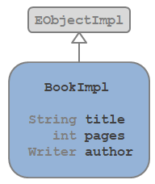
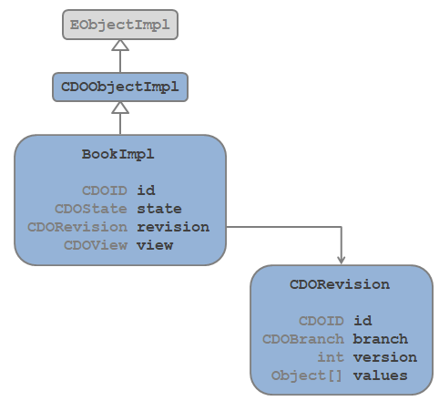
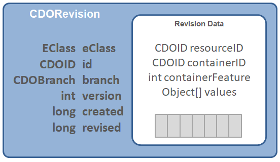

Anatomy of a Model Object


Anatomy of a Model Object |
|
EMF applications manipulate models as object graphs consisting of instances of EObjects. The EMF framework and
various EMF-based technologies provide a rich set of features for working with these object graphs, such as change
notification, persistence, and validation. EObjects are the core building blocks of EMF models, and they provide a common
interface for working with models.

CDO extends the capabilities of EMF by providing a distributed shared model framework that enables collaborative editing
of EMF models in a distributed environment. CDO achieves this by introducing the concept of a CDO repository, which
is a central server that manages the storage and retrieval of EMF models. Clients connect to the repository to
access and manipulate the shared model. In a CDO client application, model objects are represented as instances of
CDOObject, which is a subclass of EObject. This article provides an overview of the anatomy of a CDOObject
and its key features.
A CDOObject is a specialized EObject that is designed to work with CDO's distributed shared model framework. CDOObjects have several key features that distinguish them from regular EObjects. They are:
For these unique features to work, CDOObjects have a fundamentally different anatomy than regular EObjects. Especially,
to achieve scalability, CDOObjects do not contain their attributes and references directly. Instead, they delegate
the storage and retrieval of their data to a CDORevision.

In summary, a CDOObject is a specialized EObject that is designed to work with CDO's distributed shared model framework. To turn a regular EMF model into a CDO model, the model must be migrated to use CDO and regenerated to produce CDOObject subclasses. This is explained in the article Preparing EMF Models.
Note that CDOObjects and CDOViews are client-side concepts. On the server side, CDO uses only CDORevisions to represent model objects. CDORevisions are also used as the unit of storage and retrieval in the CDO repository, as well as the unit of data transfer between clients and the server.
The internet provides a wealth of information about EMF and CDO, including tutorials, documentation, and forums. Here are some useful links:
A CDOID is a unique identifier for a CDOObject within a CDO repository. It is used to identify and reference
CDOObjects in a distributed environment. CDOIDs are immutable and are assigned to CDOObjects when they are
created. CDOIDs can be of different types, such as long, string, or UUID, depending on the configuration of the
CDO repository.
The identifier of a CDOObject can be accessed using the CDOObject.cdoID() method.
A CDORevision is a lightweight representation of an object's state at a specific point in time. It contains the attributes and references of the object, as well as metadata such as the object's identifier, branch and version.
CDORevisions are immutable and are created when an object is first loaded from the repository or when an object is modified and committed to the repository. Each time an object is modified and committed, a new CDORevision is created, allowing CDO to maintain a history of changes to the object over time.
A CDORevision references other model objects by their CDOID, not by direct object references. This indirection allows CDO to manage large object graphs efficiently, as it can load and unload objects from memory as needed. Also, it allows CDO to change the revision of an object without affecting other objects that reference it. This is essential for supporting versioning and branching.

The revision of a CDOObject can be accessed using the CDOObject.cdoRevision() method.
CDOObjects are managed by a CDOView, which provides a context for accessing and manipulating the model.
CDOViews are associated with a specific branch and, optionally, a specific point in time. They provide methods for
loading and unloading objects, as well as for managing the state of objects (e.g., marking them as dirty or
new).
The view of a CDOObject can be accessed using the CDOObject.cdoView() method.
CDOObjects maintain state information that indicates their current status within the CDO framework. This state is managed by a state machine that is part of the CDOView. The state machine tracks various states, such as: